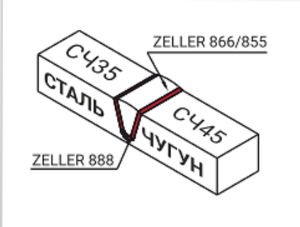
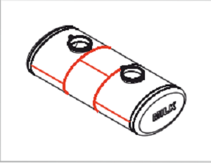
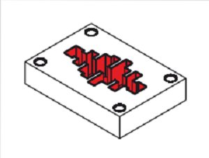

Cварка чугуна
Carbo 855
Carbo 866
Carbo 888
Carbo 800
Carbo 855
Универсальный ферроникелевый электрод Carbo 855 с биметаллическим стержнем с графитовой обмазкой. Преднозначен для сварки чугуна и чугуна со сталью без предворительного подогрева.
Carbo 866
Электрод Carbo 866 идеально подходит для сварки чугуна низкого качества, промасленного, загрязнённого примесями и ржавчиной. в различных пространственных положениях без подогрева детали.
Carbo 888
Электрод Carbo 888 преднозначен для сварки тонкого, замасленного, легированного и особенно серого чугуна, а также первого связующего слоя на сложно свариваемый чугун, без предворительного подогрева.
Carbo 800
Электрод Carbo 800 преднозначен для наплавки первого связующего слоя на термонагруженный, перенасыщенный углеродом чугуни чугун низкого качества. Используется в комбинации Carbo 855.
Резка, строжка
Carbo 880AS
Carbo 880AS
Carbo 880AS электрод для резки, строжки, разделки кромок, прошивки отверстий, нагрева деталей, без применения сжатого воздуха, горючего газа, специального инструмента или оборудования.
Сварка конструкционных нелегированных сталей
Carbo 555
Carbo 514Kb
Carbo 555
Для ремонтной сварки плохо подготовленных поверхностей, имеющих значиттельные зазоры, с присутсвием ржавчины, грязи, масла, в окружении воды, влаги и наличия гальванических покрытий.
Carbo 514Kb
Низководородный электрод с двойной обмазкой для ремонтаи сварки ответственных конструкций, исправления дефектов некачественных швов и др. Для сварки трубопроводов: корневой(-), обицовочный(+).
Сварка алюминия
Carbo 480
Carbo 490
Carbo 480
Уникальный алюминиевый электрод Carbo 480 преднозначен для ремонтной сварки алюминия и AlSi сплавов, особенно там где отсутствует TIG сварка или использование газа запрещено, например на улице.
Carbo 490
Электрод Carbo 490 преднозначен для сварки Д16, Al-Mn, Al-Mg сплавов с содержанием Mg около 3% без среды защитного газа. Шовустойчив к воздействию морской воды.
Cварка меди
Carbo 390
Carbo 340N
Carbo 320
Carbo 390
Электрод Carbo 390 преднозначен для сварки всех промышленных сортов Cu-Ni сплавов с повышенными требованиями к карозийной стойкости, тепло- и энергопроводности.
Carbo 340N
Carbo 340N преднозначен для сварки алюминиевой бронзы, латуни, стали, серого чугуна, а также переходных швов со сталью. Коррозионностоекв морской воде и химически агрессивной среде.
Carbo 320
Электрод Carbo 320 преднозначен для сварки фосфористой и оловянной бронзы с содержанием Sn 6-8%, а также сварки этих сплавов со сталью и чугуном. Стоек к трению метала о метал.
Сварка нержавеющих сталей
Carbo 6809LC
Carbo 6816MoLC
Carbo 6847Nb
Carbo 6880H
Carbo 6809LC
Высоколегированный электрод Carbo 6809LC преднозначен для сварки аустенитных, ферроникелевых и мартеновских сталей, а также углеродистых, высокопрочных, марганцовистых сталей. Сварка переходных швов между углеродистой и нержавеющей сталью. Нанесение наплавки на обычную сталь
Carbo 6816MoLC
Сплав Carbo 6816MoLC преднозначен для использования в агрессивных средах. высокая стойкость к питтинговойи щелевой коррозии в хлористой среде, морской воде и в парах уксусной кисоты.

Carbo 6847Nb
Электрод Carbo 6847Nb предназначен для сварки сталей 12Х18Н10Т, 12Х18Н9Т, 08Х18Н12Т и тп., когда к металу шва предъявляют жесткие требования по стойкости к межкристаллитной коррозии.
Carbo 6880H
Высоколегированный электрод Carbo 6880H предназначен для ремонта и изготовления печей, труб и фитингов, сваркипереходных швовс чёрными сталями и чугуном, в окисляющей газовой среде.
Разнородная сварка
Carbo 655
Carbo 663
Carbo 082Ni mod
Carbo 655
Универсальный ремонтный электрод Carbo 655 предназначен для сварки и наплавки инструментальной, штамповой, быстрорежущей, пружиннорессорной, марганцовистой, высокоуглеродистой, высокопрочной стали и неизвестных по химическому составу сталей.

Carbo 663
Универсальный CrNiMn электрод Carbo 663 предназначен для сварки и наплавки высокопрочной углеродистой (до 0.7%) и легированной стали. Особенно рекомендуется для сварки и наплавки марганцовистой стали, в том числе 110Г13Л.
Carbo 082Ni mod
Высоколегированный электрод Carbo 082Ni mod. Предназначен для ремонтногй сварки ответственных, тяжелонагруженных массивных деталей толщинами более 30 мм, без применения предварительного подогрева и последующей термической обработки.
\Защита от абразивных и ударных нагрузок
Carbo D600
Carbo 750Mn
Carbo D350
Carbo L61
Carbo D600
Электрод Carbo D600 предназначен для наплавки трещинастойких слоёв в различных пространственных положениях, устойчивых к сильным ударным нагрузкам, давлению и абразивному износу.
Carbo 750Mn
Электрод Carbo 750Mn предназначен для бронирования деталей, которые подвержены большим нагрузкам сжатия и ударам, в сочетании с умеренным истиранием, особенно на 110Г13Л стали.
Carbo D350
Электрод Carbo D350 предначначен для восстановления деталей изношенных треннием металл о металл, в сочетание со сдавливающими и ударными нагрузками. Хорошо обробатывается режущим инструментом.
Carbo L61
Электрод Carbo L61 предназначен для наплавки износоустойчивого слоя на детали из стали, стального литья, марганцовистой стали, подвергающиеся сильному абразивному износу и средним ударам.
Защита от абразивных и ударных нагрузок
Carbo L65/Tubular L65
Carbo 75WC
Carbo 738
Carbo 745
Carbo L65/Tubular L65
Электрод Carbo L65 предназначен для наплавки поверхностей, устойчивых к чрезвычайно сильному абразивному износу при температуре до 600°С. Содержит карбиди хлора, ниобия и вольфрама.
Carbo 75WC
Иновационный трубчатый электрод Carbo 75WC содержит 60% карбида вольфрама для нанесения износостойких наплавок на детали подверженые сверхсильному минеральному абразиву и незначительным ударам.

Carbo 738
Сварочный материал для износостойкой наплавки форм для литья пластмасс, для наплавки различного инструмента, требующего высокой полируемостии усталостную прочность из стали типа ХНМ.
Carbo 745
Эфективная наплавка поверхностей молотовых и кивочныхмштампов, матриц и пуансонов для выдавливания, гибочных штампов (5ХВ2СФ, 5ХВ2С, 4Х2В5МФ, 4Х2В5ФМ, 4Х4ВМФС, 3Х3М3Ф, 5Х3В3МФС)
Защита от абразивных и ударных нагрузок
Carbo 753
Carbo 735Co
Carbo 769
Carbo Tubular 700
Carbo 753
Для ремонта пресс-форм литья под давлением цинковых, аллюминиевых и магниевых сплавов. Наплавка вырубных и пробивных штампов, ножи для рубки металла. (4Х5МФС, 4Х5В2ФС, 4Х4ВМФС, 7Х3, 4Х5МФС
).
Carbo 735Co
Это альтернатива Carbo 753, в тех случаях когда необходима лёгкая мех обработка с последующей термообработкой, азотированием, особенно ножей (4Х5МФС, 4Х5В2ФС, 4Х4ВМФС, 7Х3,
Carbo 769
Ремонтная наплавка тяжелонагруженных вырубных, прессующих и вытяжных штампов горячей штамповки до 650°С. Изготовление и ремонт прорезанных и резьбовых резцов, развёрток, фрез, спиральных буров.
Carbo Tubular 700
Высокоэффективный трубчатый электрод, для наплавки на детали подверженные сильному абразивному и ударному износам. Carbo Tubular 700 - это новая концепция в наплавочных технологиях